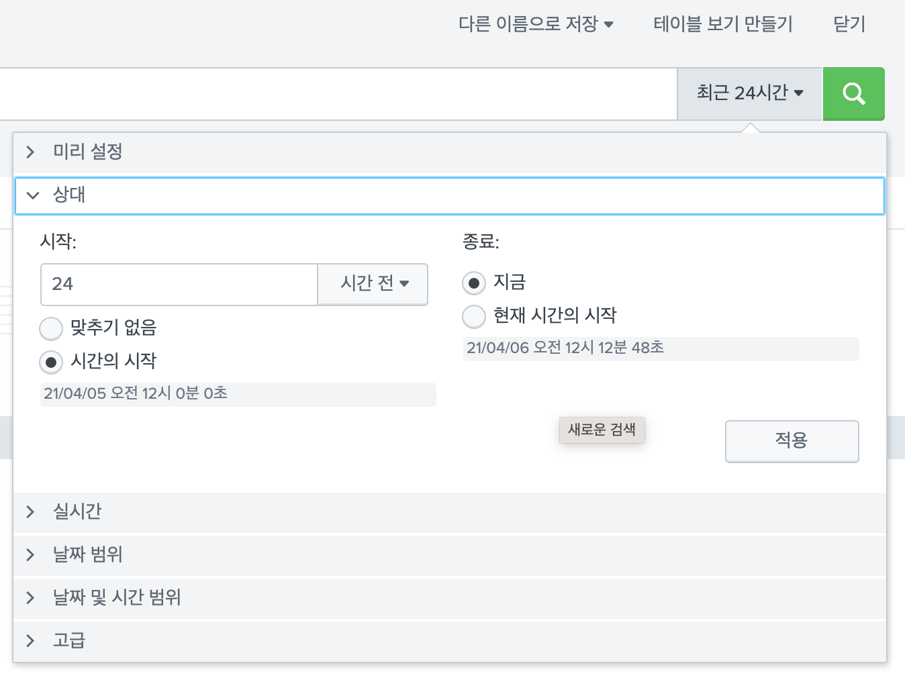

Splunk Custom Search Command 개발 - (3)
이번 포스팅에서는 마지막으로 Custom Search Command를 좀 더 효율적으로 사용할 수 있는 방법을 공유드릴 수 있도록 하겠습니다.
_time 필드활용하기time range입력받기searchbnf로 명령어 도움말 추가하기- 기타..
_time 필드 활용하기
앞서만든 kaggle 코드에서는 splunk event의 internal field 중 하나인 _time을 단순하게 time.time()으로 인덱싱되는 시점의 epoch time을 넣어줬습니다.
물론 time 값이 없는 dataset일 경우에는 _time은 필요 없겠지만 time series data인 경우 해당 timestamp 필드를 그대로 _time으로 매칭시켜주면 좋습니다.
timechart 같은 splunk 명령은
_time를 기반으로 동작하는데 데이터를 genereting 할때부터 잘 파싱하여 수집한다면, 추가 작업없이_time을 활용할 수 있기 때문입니다.
코드 추가
각 competition의 dataset 마다 time field의 format은 제각각일 것임으로, 옵션을 주어서 사용자가 동적으로 format을 입력할 수 있도록 하겠습니다.
- 추가 옵션 2개인
time_field, time_format받을 수 있도록 (단,require=False로 필수는 아니게) 하였고, - 옵션이 있을 경우에만 strptime으로 timestamp를 파싱한 후 epoch time 으로
_time필드에 넣어주었습니다.
1 | import sys |
결과
_time가 추가되면 스플렁크 검색시 이벤트탭의 시간 표시줄에도 정상적으로 표시되며, 아래 이벤트도 정상적으로 시간이 파싱되어 들어간 것을 볼 수 있습니다.
(epoch time은 GMT로 잘 파싱되었는데, 스플렁크 계정설정이 로컬타임존에 맞게 설정되어 +0900 으로 보임)
timechart도 정상적으로 동작함을 볼 수 있습니다. (앞 포스팅에서 설명드린대로 lookup으로 저장 후 호출 한 모습)

time range 입력받기
어떤 Custom Search Command 들은 time range값을 사용자에게서 입력받아야 할때가 있습니다.
앞서 만든 Kaggle 명령은 굳이 사용자에게서 time range를 전달받을 필요가 없었습니다.
하지만 예를들어 제3의 Database에서 특정 time range 안의 데이터들만을 쿼리하여 스플렁크로 가져오는 GeneratingCommand를 만들고자 한다면 그 특정 time range를 사용자에게서 입력받아야 합니다.
옵션을 통해서 time range을 일일히 입력받을 수도 있겠지만 이는 비효율적입니다. (사용자 입장에서도 정해진 timeformat에 맞춰 일일히 입력해야해서 번거롭고, 명령어 개발하는 입장에서도 파싱이 번거럽고)
또한 다른 기본 SPL들도 공통적으로 아래의 방식으로 time range를 입력 받을 수 있도록 구성되어 있는데, 저희가 만드는 명령어 또한 통일시켜 주어야 사용자입장에서는 저희가 만든 command를 더 효율적으로 사용할 수 있을 것입니다.
이 방식으로 command를 만든다면, 다른 SPL과 동일하게 다음과 같이 time range를 사용할 수 있습니다.
- Splunk Web UI 상의
Time picker를 활용할 수 있다.
- Splunk REST API 로 만든 명령어 호출시
earliest_time, latest_timeparameter도 활용 할 수 있다.-1d@d 같은 문법도 활용 가능합니다.
방법은 간단합니다.
상속받은 각 Type의 Class에 있는 아래 속성값을 활용하면 됩니다.
1 | self.search_results_info.search_et = 'ealiest_time 이 전달되는 변수' |
즉, 위 코드대로 상속받은 각 Type의 Class의 해당 속성값에 접근한다면 Web UI의 time picker와 REST API에서 지정한 ealiest_time과 latest_time에 손쉽게 접근할 수 있습니다.
값은 milliseconds가 포함된 epoch time 일텐데, 이를 사용하여 제 3의 Database에 쿼리를 시간조건을 주어 질의하는 등 활용 가능하게 됨으로 손쉽게 사용자로부터 time range를 입력 받을 수 있습니다.
searchbnf 작성
기본 SPL들은 아래와 같이 검색길잡이(명령어 도움말)이 잘 작성되어 있습니다.
저희가 만든 앱도 검색길잡이의 문구를 넣어 example 명령어와 사용법등을 제시해준다면 사용자들이 더 편하게 사용할 수 있을 것입니다.
default/searchbnf.conf 에 아래와 같이 작성하면 됩니다.
적용하려면splunk 재시작 필요
1 | [kaggle-command] |
그외 searchbnf.conf는 alias, tags 등과 같은 옵션도 있으니 참고바랍니다.
기타
여기서는 몇가지 기억에 나는 내용을 공유드리겠습니다.
run_in_preview 옵션
streaming command를 만들때였는데, 스플렁크에 인덱싱된 데이터를 특정메신저로 notify해주는 명령이였습니다.
웹에서 만든명령을 구동 시킬 때 가끔씩 2번씩 메신저로 전송이 되는 이슈가 있었는데, 결론은 commands.conf의 run_in_preview 옵션 때문이였습니다.
디폴트 값은 True이고, 결과들을 final output 하기전에 사용자에게 preview 해주기위한 옵션입니다. 이를 False로 셋팅을 해줌으로 2번씩 명령어코드가 실행되는 것을 해결할 수 있었습니다.
끝.
이상 Cumstom Search Command 포스팅을 마치도록 하겠습니다.
아직 해당 기능을 활용해 보시지 않았다면, 이 포스팅이 도움이 되었으면 좋겠습니다.